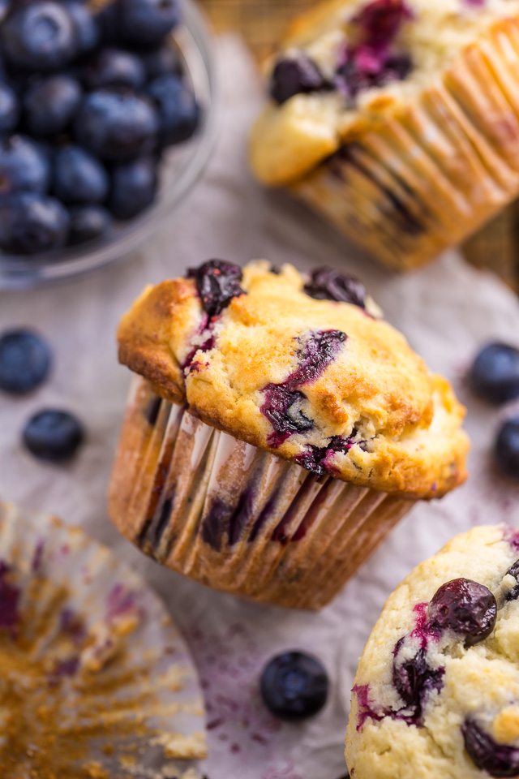

Prep Time: 10mins Cooking Time: 20mins
Total Time: 30mins
Ingredients
1 1/2 cups (195 grams) all-purpose flour
3/4 cup (150 grams) granulated sugar, plus 1 tablespoon for muffin tops
1/4 teaspoon fine sea salt
2 teaspoons baking powder
1/3 cup (80 ml) neutral-flavored oil; canola, vegetable and grape seed are great
1 large egg
1/3 – 1/2 cup (80 ml – 120 ml) milk; dairy and non-dairy both work
1 1/2 teaspoons vanilla extract
1 cup fresh or frozen blueberries; see note below about frozen berries

Directions
Prepare Oven : Heat oven to 400 degrees Fahrenheit.
Whisk the flour, sugar, baking powder, and salt in a large bowl.
Add oil to a measuring jug that holds at least 1 cup. Add the egg then fill the jug to the 1-cup line with milk (1/3 to 1/2 cup milk). Add vanilla and whisk to combine.
Add milk mixture to the bowl with dry ingredients then use a fork to combine. Do not over mix. (The muffin batter will be quite thick — see note below for more details). Fold in the blueberries.
Divide the batter between muffin cups.Use an ice scream scooper for exact measuring.
Bake muffins 15 to 20 minutes or until tops are no longer wet and a toothpick inserted into the middle of a muffin comes out with crumbs, not wet batter. Transfer to a cooling rack.